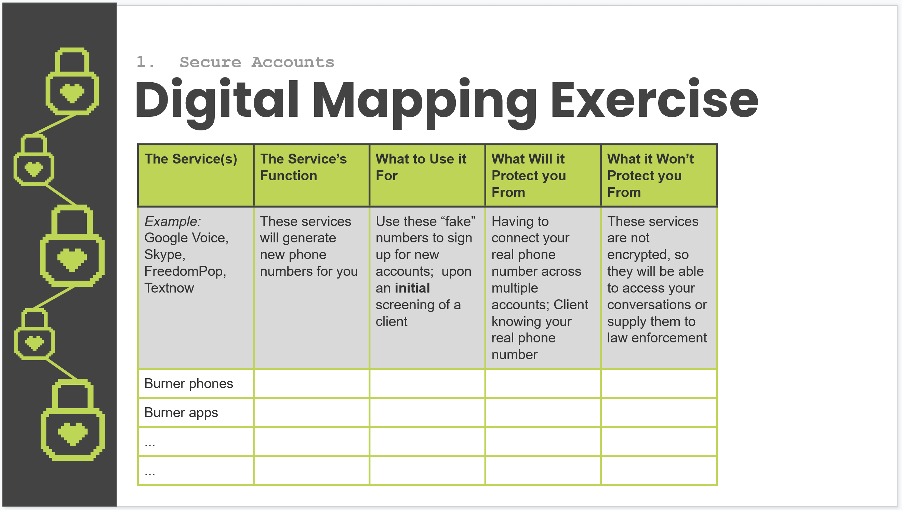
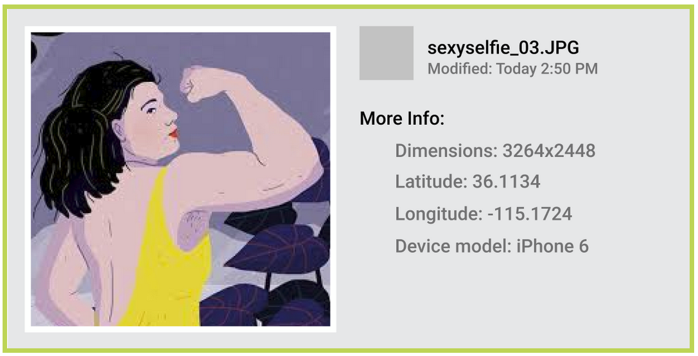

Introduction
In the Spring of 2020, Franchesca Spkektor and I collaborated with some folks at the Los Angeles chapter of the Sex Workers' Outreach Project (SWOP) to produce a cyber security tool kit specifically for sex workers. When COVID-19 related shutdowns, we accelerated the work on this project so volunteers at SWOP LA could begin leading online workshops, acknowledging this new digital landscape. The project, entitled ‘Cybersecurity for Sex Workers’ consists of three parts. 1.) a curriculum guide that goes through basic cyber security topics 2.) a PowerPoint presentation, which is a condensed version of the curriculum that can be used to guide workshops 3.) an ‘implementation hub’ that guides users through the installation and set up of the tools and services discussed in the curriculum. The most recent version of these resources (May 2020) can be downloaded below.

Section from the instructional slide deck that guides participants through one of our Digital Mapping exercises.
Process
We developed this project through online research, interviews with sex workers and community leaders, and consultation from cybersecurity experts. Throughout the course of the project, the documents were constantly updated, edited, and commented on by members of the community to refine and improve the resultant content. We’ve since handed over this content to SWOP LA to be used in their workshops. Although this is our latest version of the content, the intention for this project is to have this document be an editable text that can be updated and revised as more current cybersecurity tooling becomes available.

Illustration from the Curriculum Guide explaining metadata in photos and Exchangeable Image File Format (EXIF) Files.
Look into the Guide
From the curriculum guide: “This is a curriculum guide built to give you an understanding of your digital footprint, and share safer practices with your community. Our goal is to provide easily accessible materials to help you run workshops that teach sex workers how, why, and when to use cybersecurity tools & strategies to protect themselves and their careers. We’ve done our best to gather suggestions for safer online practices – check out the section “Who’s it for (and who’s it by)” to read more about our sources. The strategies and suggestions in this guide reduce risk. They do not eradicate it. We can’t ensure that, even if you implement everything to a T, you will be 100% safe online. But, we can promise that implementing just some of these strategies will leave you in a better position to track your digital footprint.”